The whole world as a little 3D model you can spin on a phone, no VR needed. Follow the night: break in through the fence, 1 dance in the stack, 2 walk the water pipe into the turbine hall, 3 go through the hatch into the reactor hall, then take the pad back. All three are joined. Each booth has its own lighting panel; the live booth runs the lights in its venue and every venue already passed. Drag to look around.
Every booth, speaker and dance floor in the world sits on one of these six real stops. The three water loops never mix, which is why a cooling tower’s plume is clean water vapour.
Uranium splits and heats water to about 315 °C, kept liquid by high pressure.
That water boils a second, separate loop into steam.
Steam spins rings of blades on one long shaft.
The shaft turns magnets inside coils and makes electricity.
Used steam turns back to water, cooled by river-sized pipes.
That warm water rains through the tower; the heat leaves as the plume.
⅓ becomes electricity⅔ leaves through the tower
Venue 1, the main floor, where the night begins. The tower is dry and walkable only during a refuelling outage, which is the only time anyone could dance inside one.
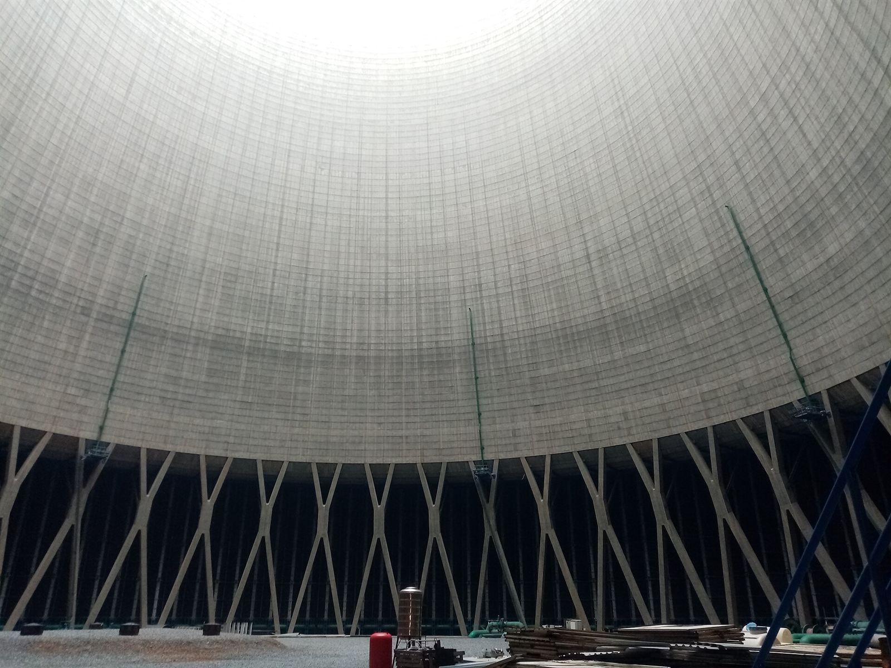
The sciencePairs of slanted concrete columns carry the whole shell, and the gaps between them are the air inlet, open all the way round. Cold air pours in here, rises through the fill where hot water rains down, and carries the heat away.
VRChat DJ & crowdThis is the front door. You arrive the way the tower’s air does, between the legs, and the tower DJ plays in the round from the water riser in the middle.
Harald the Bard · CC BY-SA 4.0
The scienceThe shell is a hyperboloid, a curved surface that can be built entirely from straight lines. That shape lets a concrete wall only about 20 cm thick stand 150 m tall or more. Warm, wet air inside is lighter than the air outside, so it rises like smoke up a chimney; the taller the tower, the stronger the draft.
VRChat DJ & crowdThis ring is the plant’s exhaust, where about two thirds of the reactor’s heat leaves. Every laser in the world aims at it, and the smoke drifts up the stack and out through it, the way the plant’s heat does.
Jakob Madsen (Unsplash) · CC0
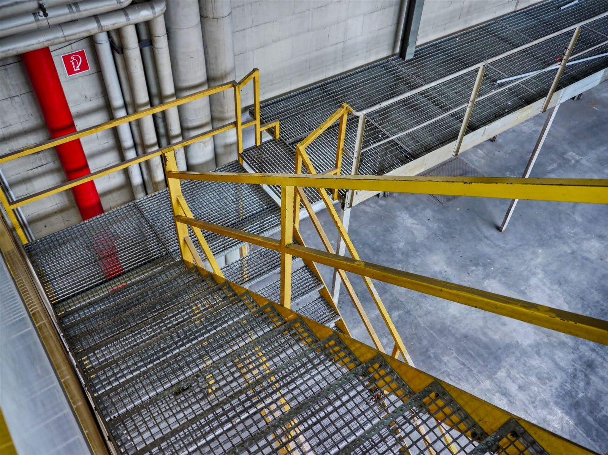
The scienceOpen steel grating sheds water and dust and stays grippy when wet, which matters on a deck under spray. US workplace rules put a guardrail’s top rail at 42 in (1.07 m), with a mid rail halfway down and a toe board at the floor.
VRChat DJ & crowdThe tower dance floor is grating over the fill, so coloured smoke rises up through it around people’s feet. Rail Spawner builds every railing to those real heights, with a post at each corner where AI-made rails used to break.
Fernost · public domain
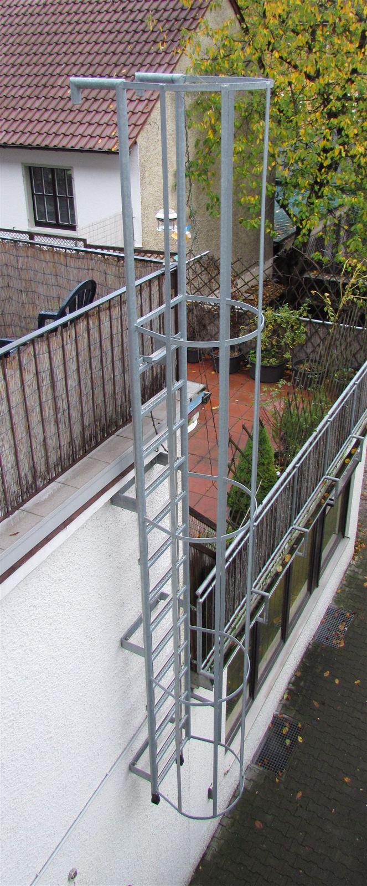
The scienceFixed ladders have rungs 10 to 14 in apart and at least 16 in wide. Cages like this are being phased out in the US: by November 2036, tall fixed ladders need a ladder safety or fall-arrest system instead.
VRChat DJ & crowdA caged ladder runs up the outside of the shell to a lookout on the rim, a quiet spot above the party where the music echoes out of the tower. Ladder Spawner builds it.
Frank C. Müller, Baden-Baden · CC BY-SA 3.0
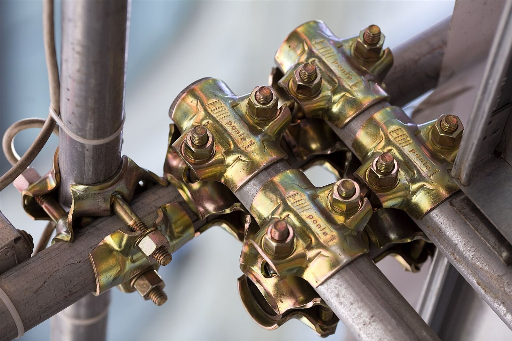
The scienceSteel tubes 48.3 mm across, joined by right-angle and swivel clamps, can be built into almost any shape. During an outage, crews scaffold the inside of a dry tower to inspect and repair the concrete and the fill.
VRChat DJ & crowdScaffolding says “after hours”: the plant is shut down for refuelling, the tower is dry, and the party has moved in. Scaffold Spawner wraps it along the shell walls.
Jorge Royan · CC BY-SA 3.0
The walk between venues. Cooling water runs between the condenser and the tower through pipes big enough to walk through.
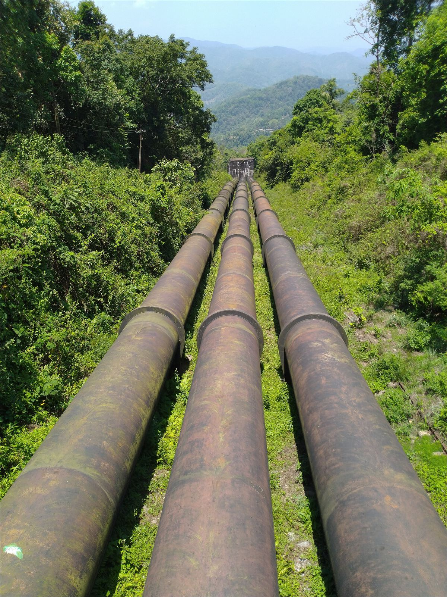
The scienceThese are penstocks feeding a hydroelectric plant in Kerala, India. A nuclear plant’s circulating water pipes are the same scale, around 3 to 4 m across, moving tens of cubic metres of cooling water every second.
VRChat DJ & crowdOne of these pipes is the walk from venue 1, the stack, straight into venue 2, the turbine hall. A glowing pad in the reactor hall brings you back.
Chinchu.c · CC0
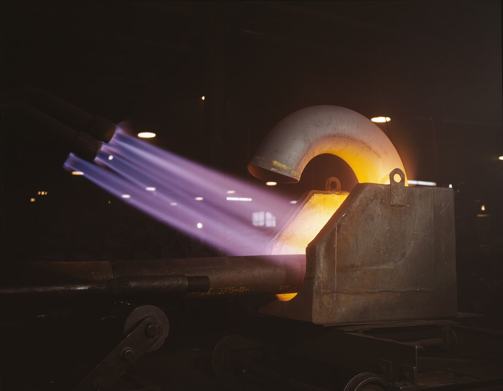
The scienceWorkers at Tube Turns in Louisville heat steel pipe until it glows and bend it into a smooth elbow. A standard long-radius elbow bends at 1.5 times the pipe’s size, which keeps pressure loss and wear low.
VRChat DJ & crowdPipe Spawner gives every corner a real elbow like this one. In the world the pipes pulse with light on the kick, so you can see the beat travel through the plant like energy.
Alfred T. Palmer, Library of Congress · public domain
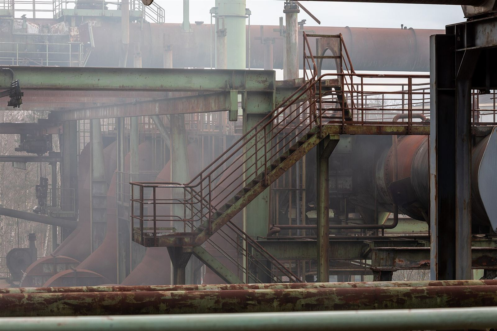
The scienceA former ironworks in Germany’s Ruhr valley that stopped making iron in 1985. Its blast furnaces, gas pipes and catwalks were kept as they were, and it is now a public park, lit in colour at night and used for concerts and festivals.
VRChat DJ & crowdProof that a dead industrial plant makes a great dance space, the same idea as VRChat’s boiler-room raves. Its catwalks are the model for the walkways that hang along the tower wall.
Dietmar Rabich · CC BY-SA 4.0
Venue 2, joined to the stack by the water pipe. Steam becomes spin, and spin becomes electricity.
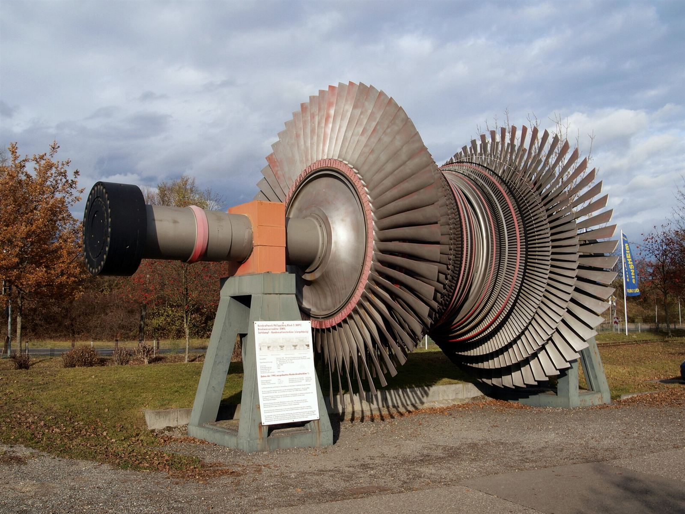
The scienceFrom the Philippsburg nuclear plant in Germany. Steam expands as it loses pressure, so each ring of blades is bigger than the last. In Europe these shafts turn 1,500 times a minute to make 50 Hz power; in the US, 1,800 times for 60 Hz.
VRChat DJ & crowdThe turbine turns steam into spin the way a DJ turns tracks into sound, and its rings of blades are the plant’s turntable platters.
AlfvanBeem · CC0
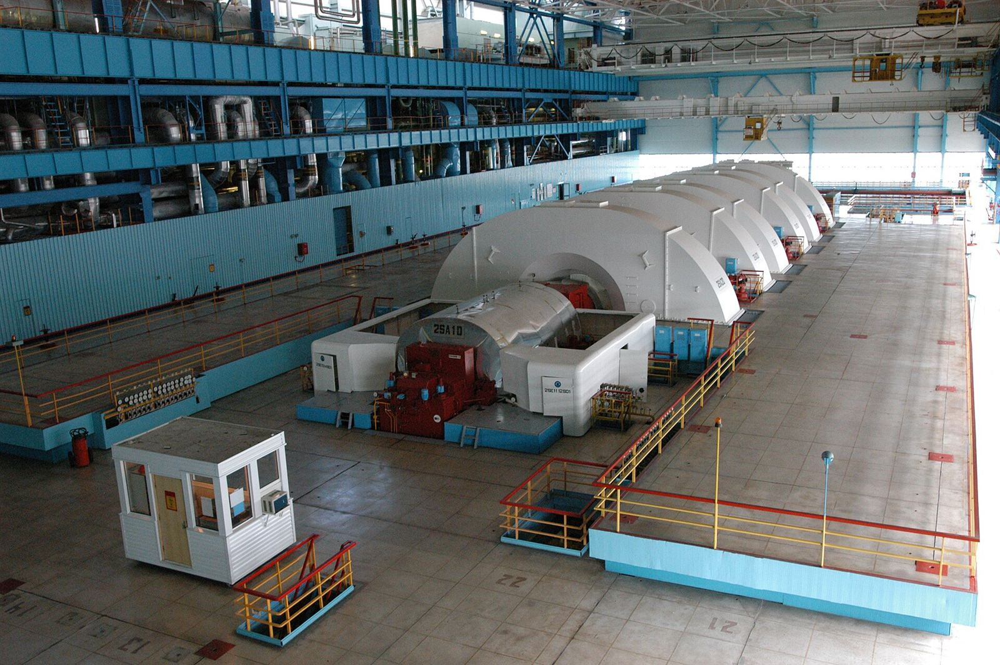
The scienceAt Russia’s Balakovo nuclear plant, turbine and generator sit end to end on one long shaft under the white housings, with the condensers below the floor.
VRChat DJ & crowdThe generator is where the plant’s electricity, and so every speaker’s power, is made. Venue 2: the crowd dances on the hall floor beside the turbines, with booth 2 up on the turbine deck. A hatch at the far end opens into the reactor dome.
Alexander Seetenky · CC BY-SA 3.0
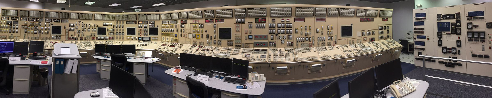
The scienceShearon Harris in North Carolina runs one pressurized water reactor. Licensed operators run the plant from boards like these and never stand at the core. When something is off normal, a window on the alarm panel, called an annunciator, lights up and sounds.
VRChat DJ & crowdEach DJ booth gets its own small version of this board: a lighting panel built into the decks. The live booth runs the lights in its own venue and every venue the night has already passed, its faders set the show’s intensity like control rods set a reactor’s power, and the alarm windows flash on every drop.
RadioFan · CC BY-SA 4.0
Stop 2, the steam generator, sits sealed inside the containment building. There is no free photo of one yet, so it waits for its first in-world render.
Venue 3, through the hatch from the turbine hall: booth 3 on the bridge over the glowing pool.
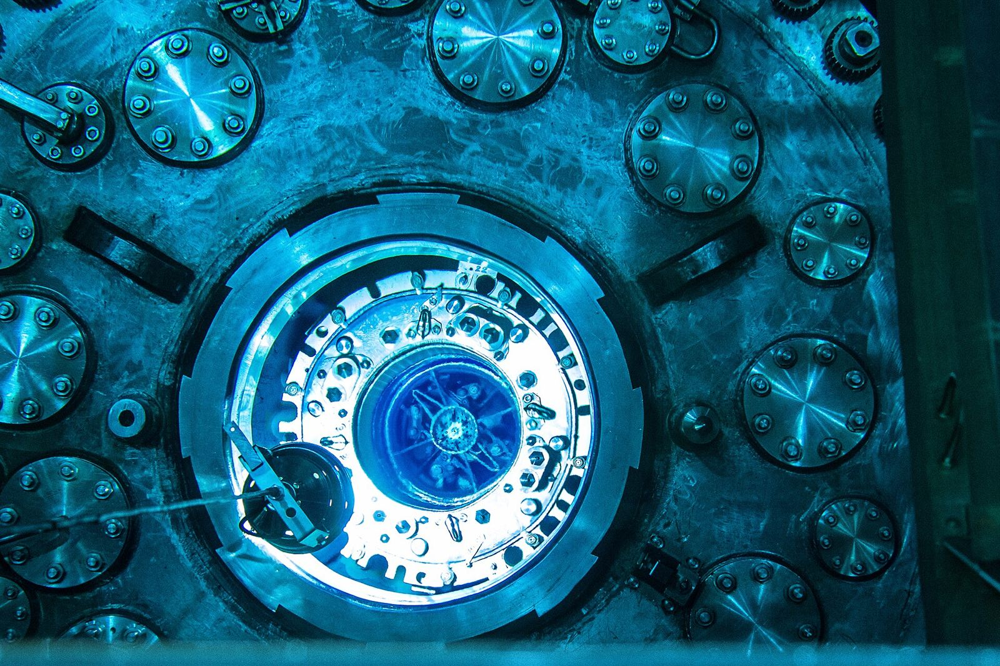
The scienceOak Ridge’s High Flux Isotope Reactor during refuelling. The core sits under several metres of water that cools it and blocks its radiation. The blue is Cherenkov light: electrons moving faster than light can travel in water (about 225,000 km/s) give off a blue glow, and it brightens as reactor power rises.
VRChat DJ & crowdVenue 3 sits right above it. The pool glow pulses with the music, brightening with loudness the way real Cherenkov light brightens with power.
Oak Ridge National Laboratory · CC BY 2.0
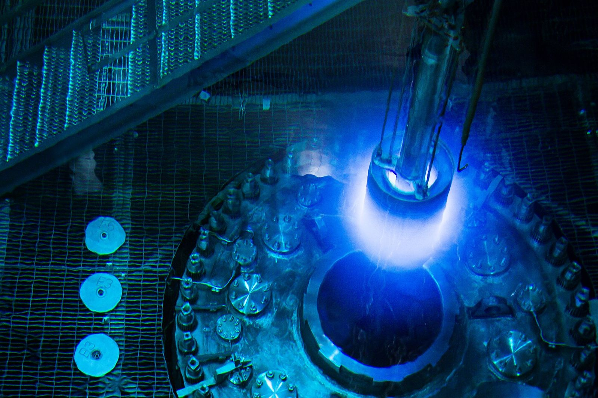
The scienceA tool on a long pole lifts a fuel element out of the core under water. The water above it is enough shielding for workers to stand over the pool. HFIR is an 85-megawatt research reactor.
VRChat DJ & crowdBooth 3 stands on a bridge like this, right over the core, with the hard-hat crowd ringing the pool.
Oak Ridge National Laboratory · CC BY 2.0
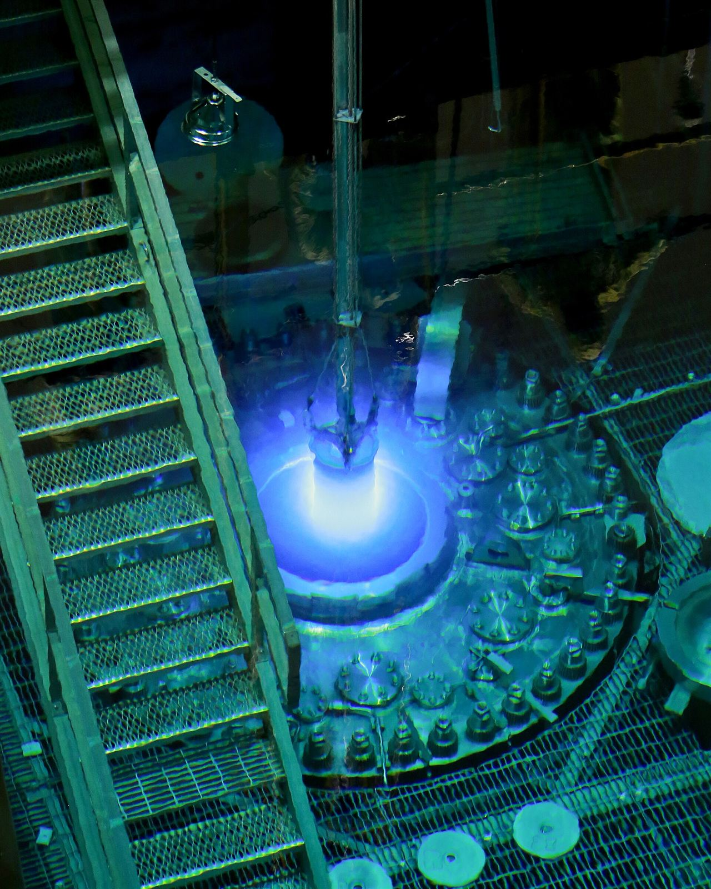
The scienceCherenkov light is strongest at the shortest wavelengths, so it looks blue to us and runs on into ultraviolet. Used fuel glows dimmer as it cools, so fresh-from-the-core fuel is the brightest thing in the pool.
VRChat DJ & crowdOn the breakdown the plant SCRAMs: alarms, red light, the rods slam in and the glow dies. On the drop it comes back to full power. A SCRAM is a real emergency shutdown that stops the chain reaction in seconds.
Oak Ridge National Laboratory · CC BY 2.0
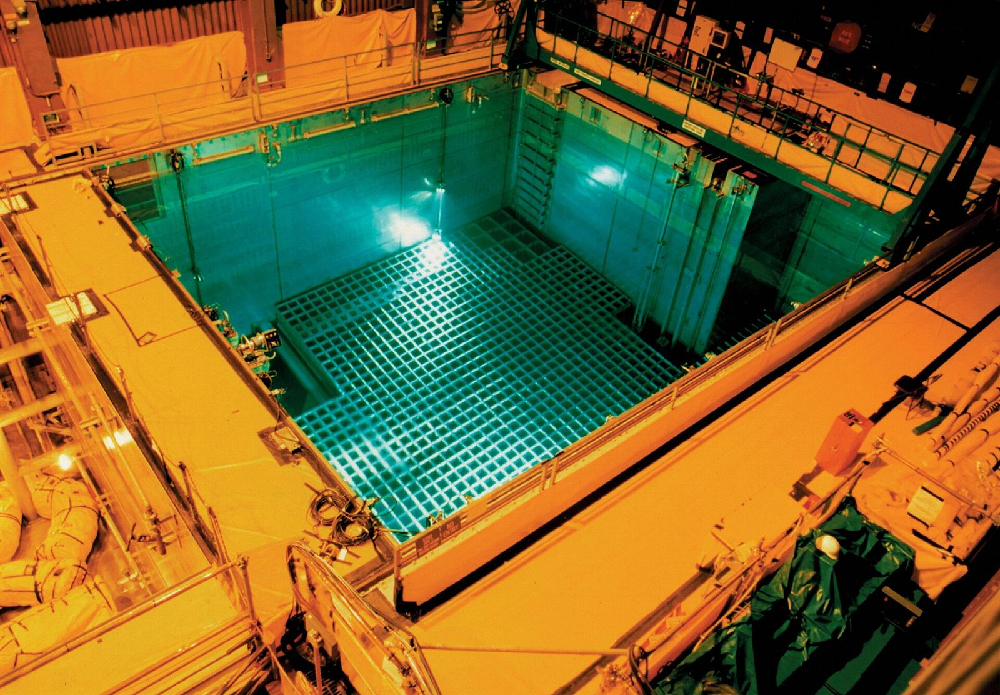
The scienceCalifornia’s San Onofre plant closed in 2013. Used fuel cools for years in racks on the floor of a pool about 12 m deep, moved by a bridge that rolls across the top.
VRChat DJ & crowdThis bridge is the model for the DJ bridge, and the pool is Water Spawner’s “reactor pool” preset: deep, still, blue-green and lit from below.
US Nuclear Regulatory Commission · CC BY 2.0
One water system for all of Astra’s worlds. Pool, ocean and lake water behave differently, so each gets its own preset.
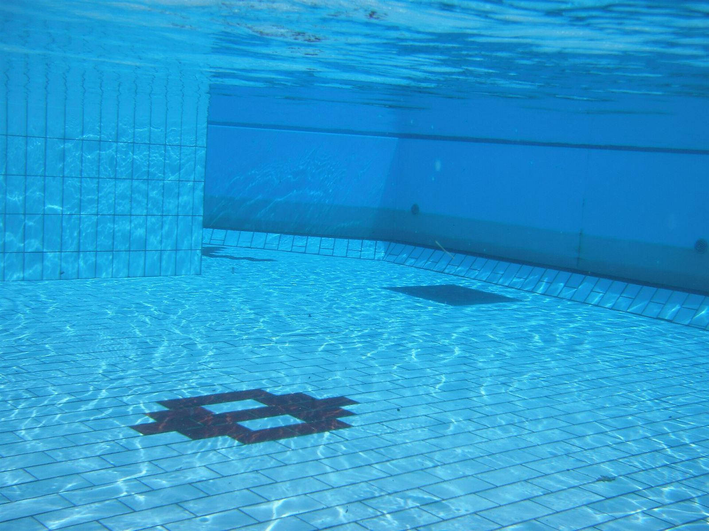
The scienceRipples on the surface act like moving lenses, focusing sunlight into bright wavy lines on the tiles. These are called caustics.
In the worldsThe “pool” preset draws those moving light lines, for Liminal Doors’ pool after closing and any other world with a pool.
Steven Lek · public domain
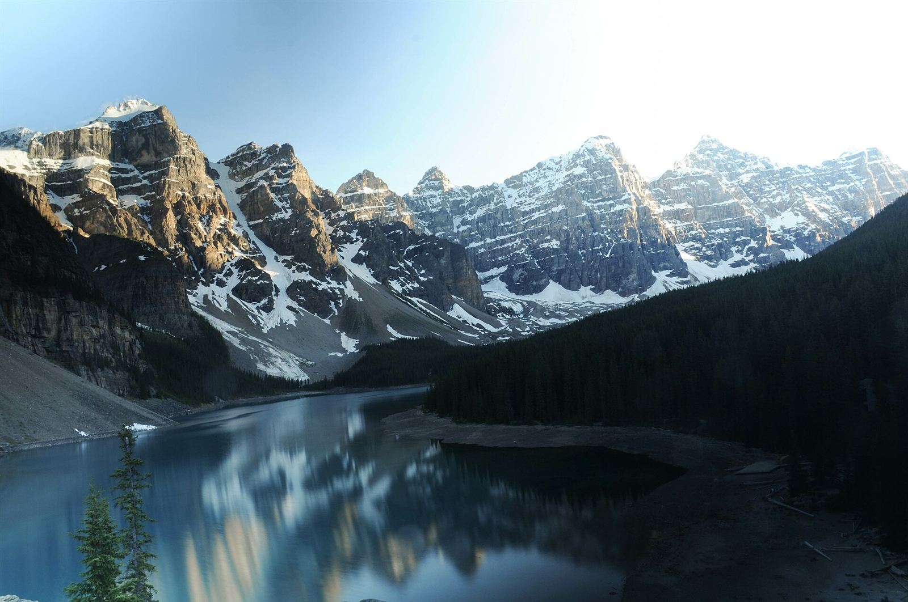
The scienceStill water reflects more light the lower you look across it, so a lake turns into a mirror toward the far shore and stays clear right at your feet.
In the worldsThe “lake” preset: mirror-calm in the distance, clear up close. The dry basin under the tower deck borrows its dark-mirror look.
Ezra Jeffrey (Unsplash) · CC0
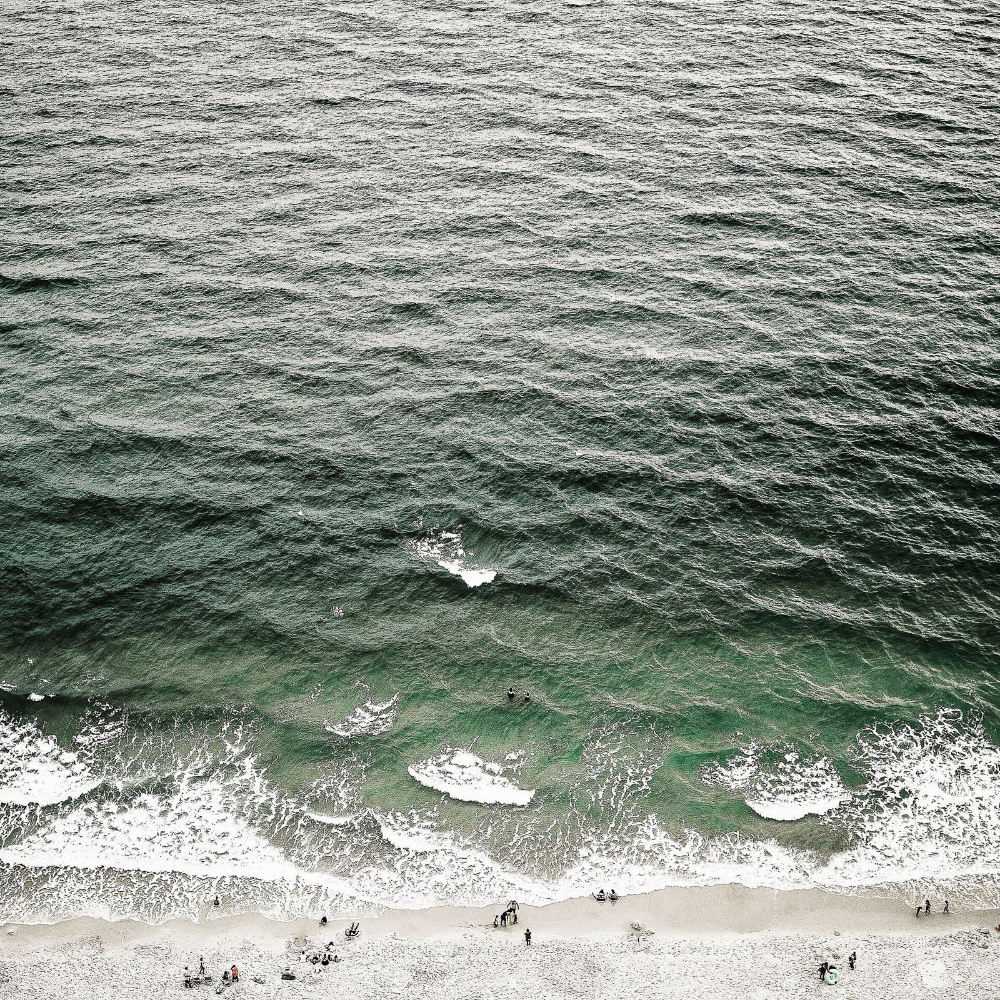
The scienceA wave breaks when its height reaches roughly four fifths of the water’s depth. The white is air churned into the water as foam.
In the worldsThe “ocean” preset: waves and foam for the worlds with a sea, like Piranesi House’s tides and Astra’s Infinite Pole.
Caleb Jones (Unsplash) · CC0
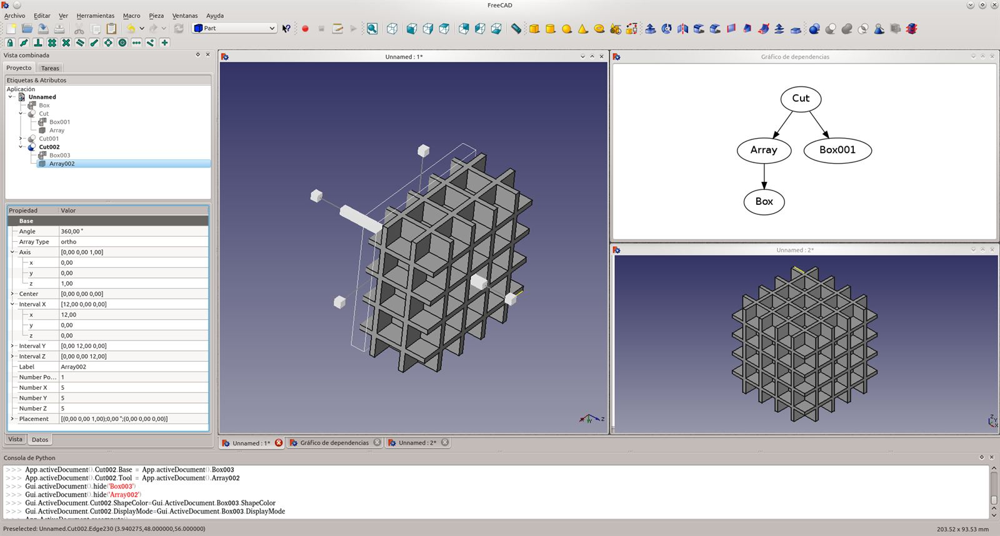
The scienceCAD files such as STEP store exact mathematical surfaces, not triangles, so they have to be cut into a mesh before a game engine can draw them. Free engineering models are mostly for reference, so the tools follow the real rules instead of copying anyone’s file.
In the worldCAD Converter brings in real parts like valves, pumps and cranes, and the spawners build everything that repeats.
Tony Rotondas · CC BY-SA 3.0
Every photo comes from Wikimedia Commons, resized for this page. CC BY and CC BY-SA photos are shared under those licences.
| Photo | By | Licence |
|---|---|---|
| The view out of a nuclear cooling tower | Jakob Madsen | CC0 |
| Inside of a Natural Draft Cooling Tower 3 | Harald the Bard | CC BY-SA 4.0 |
| Grating stairs and walkway | Fernost | Public domain |
| Fluchtleiter | Frank C. Müller | CC BY-SA 3.0 |
| Scaffolding clamp joints, Rome | Jorge Royan | CC BY-SA 3.0 |
| Sabarigiri Penstock | Chinchu.c | CC0 |
| Large pipe elbows formed at Tube Turns | Alfred T. Palmer | Public domain |
| Landschaftspark Duisburg-Nord | Dietmar Rabich | CC BY-SA 4.0 |
| Philippsburg condensation turbine | AlfvanBeem | CC0 |
| Balakovo NPP turbine hall | Alexander Seetenky | CC BY-SA 3.0 |
| Shearon Harris control room | RadioFan | CC BY-SA 4.0 |
| HFIR Refueling July 2015 (also 2, 3) | Oak Ridge National Laboratory | CC BY 2.0 |
| San Onofre spent fuel pool, 2014 | US Nuclear Regulatory Commission | CC BY 2.0 |
| Swimming pool underwater | Steven Lek | Public domain |
| Calm waters between mountains | Ezra Jeffrey | CC0 |
| Drone view of ocean waves | Caleb Jones | CC0 |
| FreeCAD Arrays | Tony Rotondas | CC BY-SA 3.0 |
.jpg){kind=link}


.jpg){kind=link}


.jpg){kind=link}
.jpg){kind=link}
.jpg){kind=link}


.jpg){kind=link}
.jpg){kind=link}